A brand handed over, not built out
Koto delivered a static identity. The product still said Weltsparen. Web, mobile, and email each spoke a different visual language.
Protected presentation
The Raisin presentation is password-protected when opened directly. Use the same password as the case study.
The starting point
Solo designer embedded in the B2C Growth and Engagement tribes — reporting to VP Design, taking project brief from Head of Product.
I lead B2C design in Growth & Engagement — evolving Raisin’s brand across web and mobile, and the practice that makes multi-market change stick.


Koto delivered a static identity. The product still said Weltsparen. Web, mobile, and email each spoke a different visual language.
User studies were rare. Critiques weren't happening, and design impact wasn't measured and reported. Every project paid a tax for it.

Closing the gaps
Two programmes, run in parallel — not one tidy sequence.
My remit: close the three gaps — brand evolution into live product (absorb the agency handoff and carry it into the surfaces customers use; redesign web, mobile, and communication into one home for their wealth), and enablement in parallel (ways of working, research and critique rituals, craft standards, and the AI programme) so the team could sustain it. Practice = customer outcomes. Enablement = team capability. I where I owned it; we at tribe scale.
“Redesign the dashboard experience. Make Raisin feel like one product.”
Practice
Research-led decisions, shipped screens, measured outcomes.
Impact: NPS, task success, adoption, AuM, and retention all moved on the customer side. Measured honestly in Proof; not everything lifted.
Enablement
Rituals, research OS, docs, tooling, coaching — I built; the org adopted.
Impact: Research rituals, playbooks, AI workflows, and coaching the org adopted.
This chapter turns the web dashboard into a single home for wealth across savings, investments, and retirement, and carries the new brand into a live, multi-market product.
This chapter turns the web dashboard into a single home for wealth across savings, investments, and retirement, and carries the new brand into a live, multi-market product.
I planned the research and ran interviews with the design team, I facilitated co-creation workshops, and validated the hypotheses. I synthesised findings and designed solutions — then We shipped the MVP with product and engineering across 12 markets.


8 interviews (±2) · 12 German customers across segments · 2 weeks · 3× product designers
Baseline research · 🇩🇪 · One week · 4× designers
Sat with B2C customers and asked them what Weltsparen felt like after login: what they needed, what was missing, and how they experienced the dashboard overall.
A collaborative qualitative sprint — four designers, one week, traditional research methods. We sat with B2C customers in Germany and asked what Weltsparen felt like after login: what they needed, what was missing, and whether a redesign was justified.
We ran paired interviews, synthesis sessions, and archetype mapping together — not a handoff from research to design, but one team building the evidence base.
Sample set · 8 interviews (±2) · Raisin’s existing B2C archetypes

3× designers collaboration · 1 week
Co-creation · synthesis · two-week sprint
We spent one week clustering baseline findings into themes — then translating each theme into How-Might-We statements the whole tribe could ideate against.
Head of Design, PM, Director, and designers from other tribes worked from the same synthesis wall — shared insights and data points, not opinion.
Most desirable · Most feasible
How might we make what’s held at each bank — and how much — visible at a glance?
How might we bring ease in navigating across active and available products?
How might we balance clarity in one view for what’s invested vs transactional?
Prioritised for ideation
“How might we make what’s held at each bank — and how much — visible at a glance?”
“How might we bring ease in navigating across active and available products?”
“How might we balance clarity in one view for what’s invested vs transactional?”
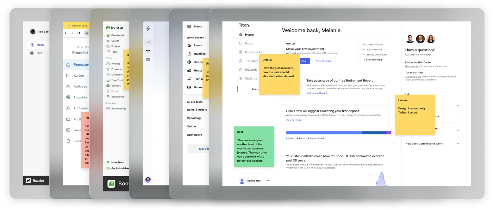
Competitive patterns — what peers showed on landing vs drill-down.
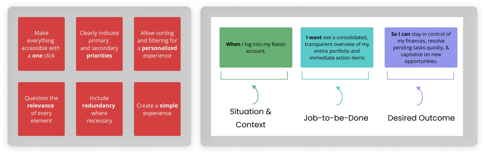
Jobs to be done and design principles from the brief.
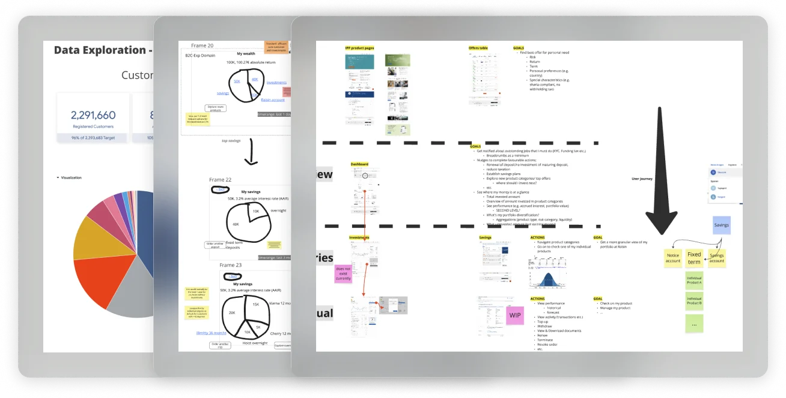
Critique with PM, HoD, and engineering — one hierarchy taken to research.
Variation A explored in critique · B — overview → asset class → bank
Facilitation · Collaboration · Data analysis · Ideation · Prototyping
WEALTH HUB · IDEATE
I facilitated ideation from competitive reads through wireframe critique — aligning the tribe on one holdings-first hierarchy for concept validation.
Design conflict · Product vs Design
A · Flat list
Faster to build · reads as a product catalogue
B · Structured hierarchy
Savings · investments · retirement — by what customers hold
12 customers across segments · Multi-market 🇩🇪 🇳🇱 🇪🇸 🇬🇧 🇫🇷 · AI Synthesis using transcripts · 1 week
Concept validation · customer research · 12 participants · DE + NL
Landing still needed customer evidence — not critique. I led Raisin’s first international concept test on two full-fidelity landing prototypes — modular vs integrated — with AI-assisted synthesis across five markets.
Several landing decisions still needed customer evidence — not critique. I led Raisin’s first international study on allocation visualization: treemap vs donut.
Sample set · 12 participants · 2 prototypes · PRE + POST-KYC · 🇩🇪 🇳🇱 🇪🇸 🇬🇧 🇫🇷
Concept validation · Concept A vs B
A · Upfront & modular
Top-level actions · separate performance, account, and recommendations · pending work in the portfolio
B · Integrated overview
Glanceable allocation · condensed action rail · needs-attention and recommendations in one flow
Position: Overview-first landing — detail on drill-down.
Research conclusion: Donut beat treemap — allocation legible at a glance, route into account actions.
Outcome: Donut + level in/out shipped in MVP
Variation A explored in study · B shipped
Also in the study
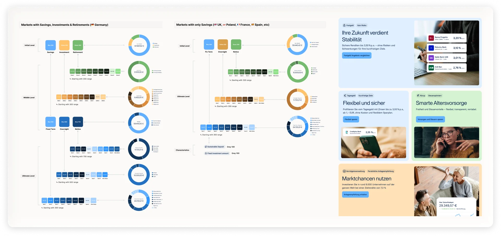
Asset-class hues · savings-only remaps · donut child shades — 12 markets, light + dark.
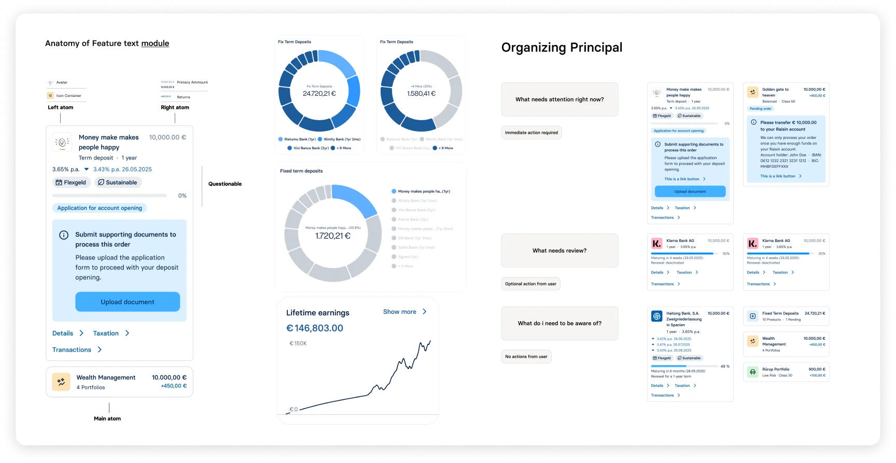
Listing row anatomy — hierarchy, metadata, and actions aligned to the component library.
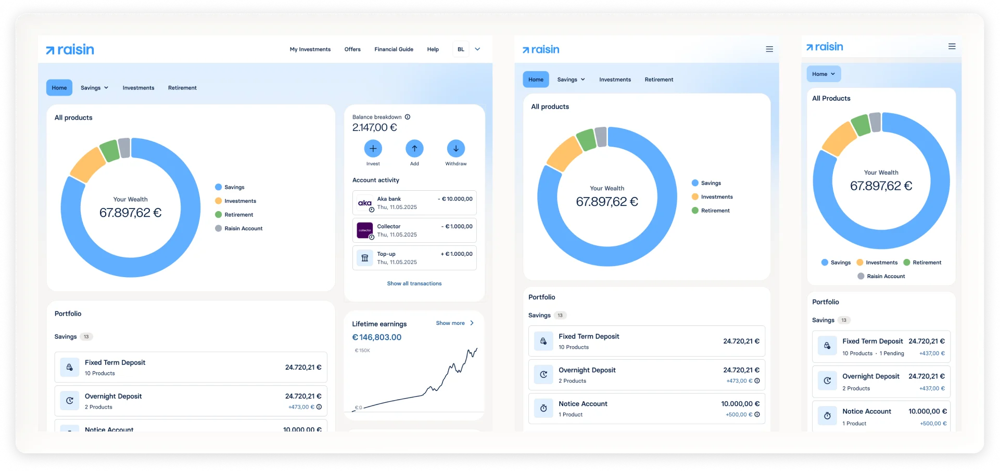
Final interface — colour map and components applied across the landing experience.
Product colour map · Listing anatomy · Final interface · 12 markets
WEALTH HUB · VISUAL DESIGN
Type, colour, layout, and components — one system for twelve markets. The colour map settled brand debate; typography, spacing, and components shipped in parallel with Foundation-fix.
12 markets · 3 market-type rules · light + dark token specs · web component library built from scratch.


After MVP launch · against targets declared before design
Customers used Wealth Hub as a home for their wealth, not a product catalogue.
Adoption target · 3 months post-launch · Met
Task completion target · Not systematically measured pre-ship
Agree they can better understand and manage their wealth
Dashboard / design NPS (DE +35 · NL +23 · ES/PL +53)
Business context: AuM reached ~€77bn by end 2024; the dashboard migration protected NPS and HNW loyalty through the rebrand.
What customers praised wasn’t polish — it was the structure:
“Everything works great. I especially like the drill-down graphics — Overview → Fixed deposit → individual bank. That’s how every website should work.”
“Finally a dashboard that shows my full portfolio in one place — much clearer than before.”
MVP live — measure every release. In parallel: Ways of Working, prototyping standards, and a listening loop.
With the MVP dashboard live, we entered monitoring mode — launch surveys, direct customer feedback, and a clearer read on what each release moved. In parallel, I enabled the design team: Ways of Working, Principles of Prototyping, and a shared measurement frame so product learning and craft could compound together.
I owned post-MVP discovery and feedback-led prioritisation. I led design enablement and measurement. We shipped with engineering.

Post-MVP · listen & ship
The MVP created a listening loop — not a second redesign brief. I turned launch signals into a prioritised release queue and measured each shipment on its own terms.

Shipped in sequence:
Release 01 Filtering
Category, deposit, and country lenses with availability.
Impact: All-deposits view led adoption.


Release 02 Zero-state
Zero-state A/B — donut carousel vs empty, two markets.
Impact: No conversion lift — visual hypothesis without enough upstream qual. Tightened how we form conversion A/Bs after. Shipped for clearer empty-state UX.
Release 03 Raisin Wrapped
Year-in-review for savers — design-initiated, no PM brief.
Impact: Strong reach/completion · soft AuM (not significant). Next: bridge reflection → action (renew / add funds).
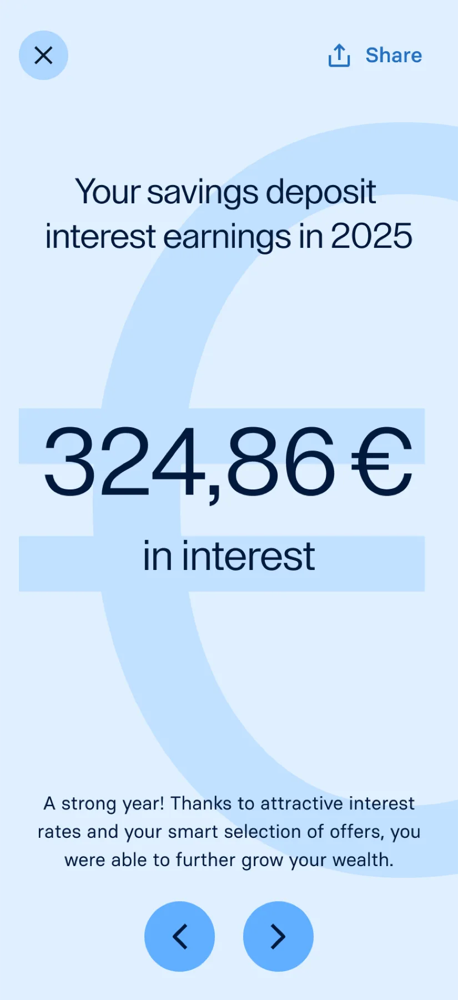

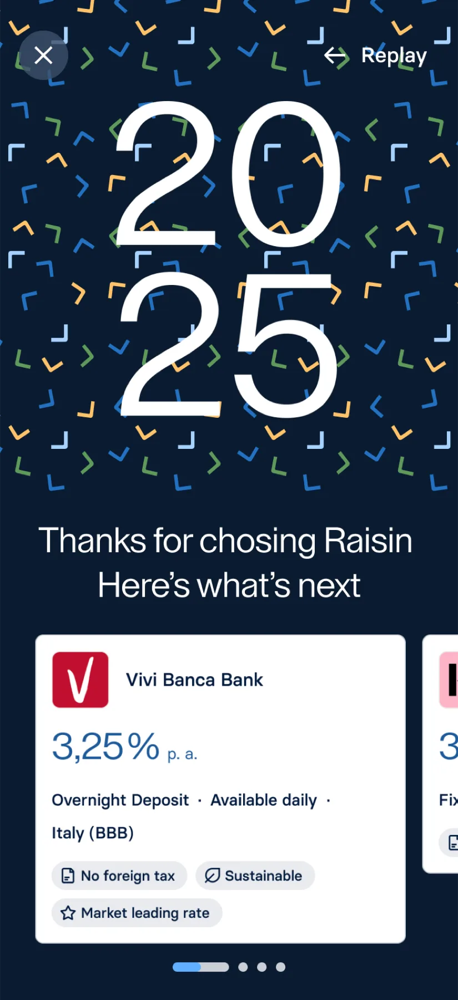
Release 04 Email system
Atomic email system — transactional and marketing, Bloomreach-ready.
Impact: Master-template concept · spans every marketing & transactional use case.

Figma Ways of Working

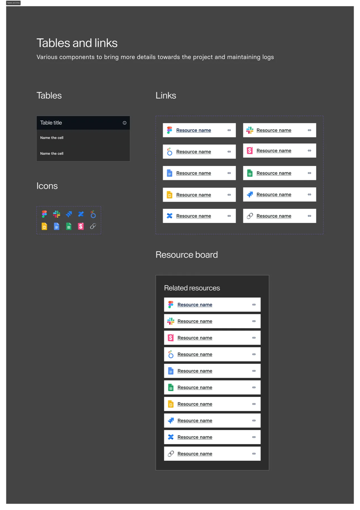
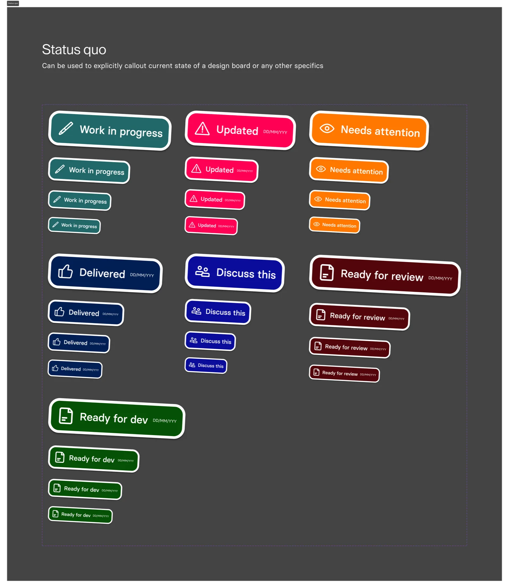
Principles of Prototyping


Enablement
Every project restarted file structure; every prototype landed at a different fidelity. Figma Ways of Working standardised the files. Principles of Prototyping standardised the conversation — what to build, at what fidelity, and why.
WoW: adopted team standard · still how every project starts
PoP: shared language for prototype fidelity · still how we critique
Research · operating model
User studies had been rare and German-only. Wealth Hub changed that — multi-market interviews, synthesis, stakeholder alignment. The MVP launch survey showed structured feedback at scale. I authored the research operating model: when to use interviews vs surveys, how participants are recruited through Bloomreach, hypothesis-first briefs, synthesis in Miro, and the compliance layer so legal and markets could sign off once, not per study.
6-step workflow · Bloomreach recruitment · Confluence playbook
Visual pending
Research operating model — workflow and toolkit excerpts
This chapter is about taking mobile from a stalled redesign to a shipped Wealth Hub — without redoing twelve markets of web research.
This chapter is about taking mobile from a stalled redesign to a shipped Wealth Hub — without redoing twelve markets of web research.
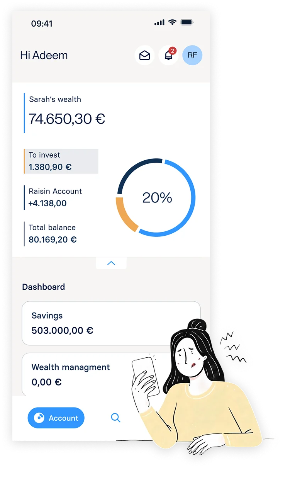

Launch survey · Frontend event tracking · Segment composition
Desk research
I combined the survey, click data, and segments in one read — on legacy mobile, taps split between tabs, the donut, and the portfolio card, with no clear home.
Web Wealth Hub earned its structure through customer research. Mobile didn’t have that yet — only a stalled redesign and pressure to copy across. I gathered new evidence instead: recorded sessions from the live web dashboard and survey responses from customers, alongside legacy mobile interaction patterns (42% / 25% / 33%). Together they showed why the shortcut failed: real usage didn’t match web’s model, and no single mobile pattern had won.
Legacy mobile · interaction data · pre-ideation baseline
Customer problem
Web had become a home for their wealth. On mobile, the same customer still met a disconnected surface — no consolidated view of what they held.
Legacy mobile: 42% / 25% / 33% interaction split — no pattern worth copying from web.

Web · mWeb · legacy app compared · inherit the system, redesign the surface
Web ↔ mobile parity
I compared the new evidence against web, mWeb, and the legacy app — then set the rule: inherit the system, redesign the surface.
Web had earned its structure through research and shipped across 12 markets. Mobile’s job wasn’t to repeat that work — it was to translate it. I put the new data side by side with the web dashboard, mWeb, and the current mobile app to see what carried and what broke. That comparison set a simple rule the tribe could align on: inherit the Wealth Hub concept and system, redesign the mobile surface — unblocking ideation without discarding what was already validated.
Inherited: hierarchy + colour system · Redesigned: tabs + Home
Two clickable prototypes — same wealth jobs, different home structure
High-fidelity prototypes · 4th iteration
MOBILE · IDEATE
Recognizing the constraints of limited mobile screen real estate, I restructured and redistributed key dashboard sections to create a more focused, mobile-first experience tailored to user needs and context.
Grounded in the Mobile app dashboard Maze Study brief: asset-on-platform clarity, Portfolio for owned products, and legible primary sections. Neither concept was pre-selected — both went into validation as Hypothesis A and B.
Concept validation · Hypothesis A vs B
A · Tabbed IA
Overview split across tabs — customers hop between sections to build the picture
B · Portfolio-card home
Total assets and performance on landing — products and detail one level in

Two-week unmoderated Maze study — full report in Confluence
Maze · two weeks unmoderated · 92.9% vs 71.4% task success
MOBILE · VALIDATION
Once the hypotheses were set, I documented what we needed to learn, started automated recruitment through the live web dashboard, and brought Maze into Raisin to run Voice-AI–hosted, unmoderated concept testing on both prototypes.
Full setup and results are in Confluence — Mobile app dashboard Maze Study. The web dashboard was the recruitment surface; Maze carried the two-week, unmoderated Voice-AI study after I introduced it as Raisin’s research tool for this program.
Selected concept · Hypothesis A
A · Tabbed IA
92.9% task success — clearer section model; taken into visual design
B · Portfolio-card home
71.4% task success — strong landing clarity, but less legible primary sections in testing


Four-tab IA — drag to compare light and dark · switch tabs
Collaborate with freelance designer · Mobile design-system refresh
MOBILE · VISUAL DESIGN
I ran the final visual-design pass with a freelance designer — together we revised foundational mobile design-system tokens and the components themselves, so the shipped UI sat on the library instead of one-off screens.
That pairing covered token updates and component work in Figma: light and dark on the Wealth Hub colour map, four-tab IA from validation, and patterns other squads could reuse — not a separate mobile skin.
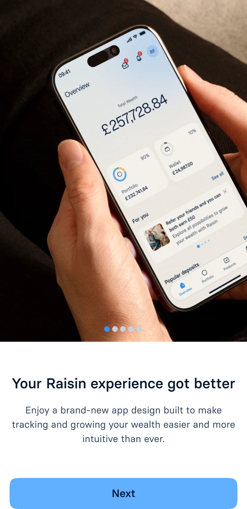
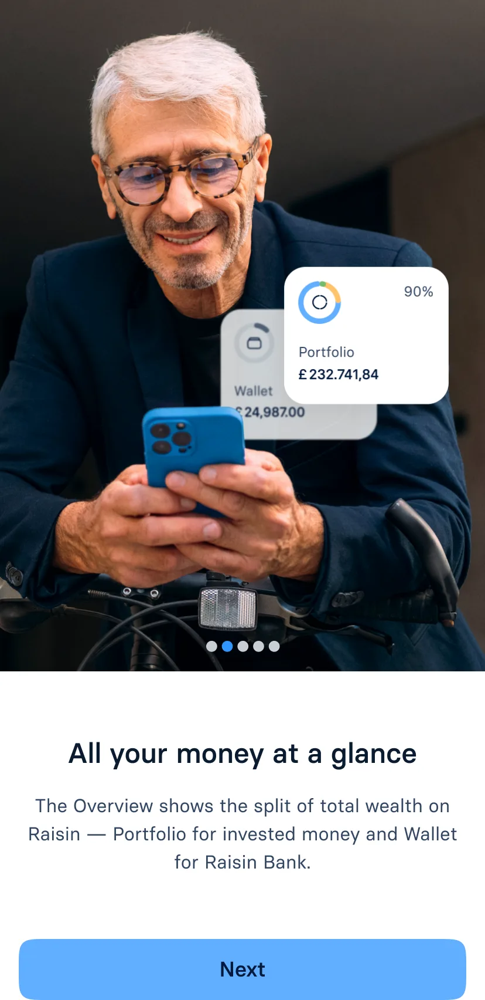
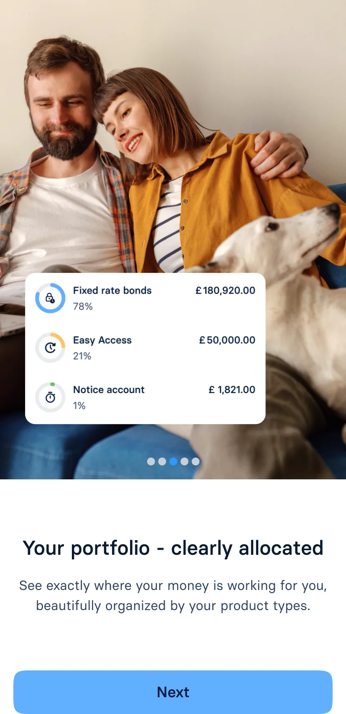
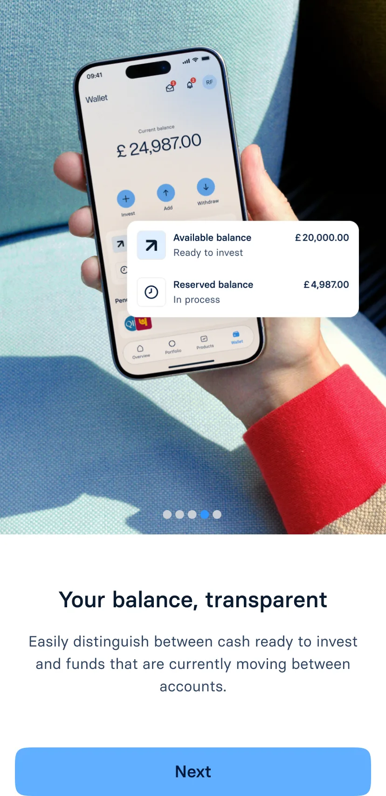
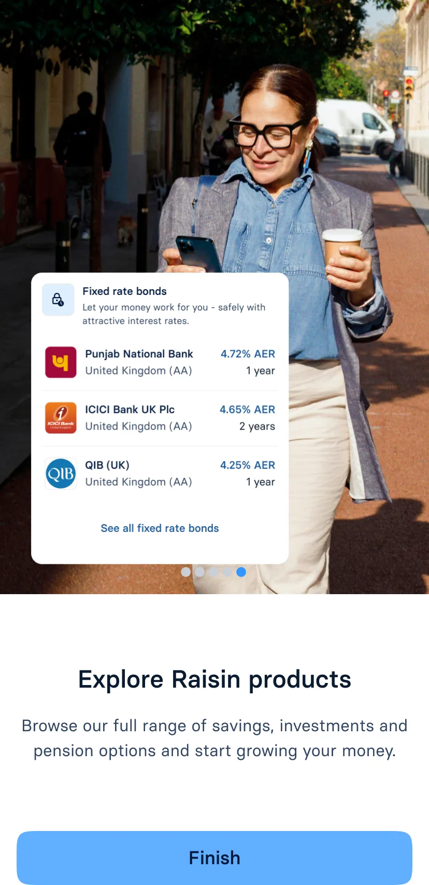
12 B2C markets · four-tab IA · light and dark
Shipped · mobile dashboard
Beyond a visual refresh: clearer holdings, performance, and next steps across Overview, Portfolio, Products, and Wallet. Same Wealth Hub spine from web and Maze validation — rolling out market by market.
Early App Store signal backs the structure — reviewers call out overview and clarity before polish. Design NPS and task metrics are still being recorded post-launch.
Maze-validated · shipping now · early reviews 5/5
What customers say first:
“Clear and informative — exactly what I need at a glance.”
“Clear and easy to overview — everything in one place.”
“Easy to invest and move money between products and my linked account — best way to stay in control of savings.”
“Finally a dashboard that shows my full portfolio in one place — much clearer than before.”
What started as a prototyping workshop became design's 180-day AI Enablement plan. As one of four org-wide AI Champions, I built four tools for daily production use, championed the operating plan, and led Showcase and Clinic until the workflows stuck.
What started as a prototyping workshop became design's 180-day AI Enablement plan. As one of four org-wide AI Champions, I built four tools for daily production use, championed the operating plan, and led Showcase and Clinic until the workflows stuck — then co-authored the design vision for where Raisin must evolve next.

Origin
One of four Champions — Lab, Showcase, Clinic, 180 days.
VP launched org-wide AI enablement. As one of four AI Champions, I wrote design's operating plan and ran adoption — Lab kick-start, weekly Showcase demos, and Clinic office hours I led. Coached eight designers on Cursor foundations first, then autonomy on live work; the programme was mostly coaching, the toolkit supported it.
1 of 4 AI Champions · Kick-start Lab → Showcase + Clinic · 180 days

Design × Cursor toolkit
Playbook in Confluence — Setup through Workflow, then weekly coaching on real work.
To coach the team, I documented the playbook in Confluence first — then used it to get designers set up on Cursor, explain core programming ideas, vibe-code through live examples, and unblock them in three 60-minute sessions each week.
The playbook covered Setup through Workflow — install, shared rules, skills, subagents, commands, and iteration loops. Confluence held the source of truth; coaching turned it into muscle memory on real work.
Setup
Install Cursor, connect Figma MCP, and Git basics to get a repo running.
Rules
Shared .cursorrules — tokens, typography, accessibility, and One Data on every prompt.
Skills
Repeatable pipelines — design QA, annotate, and variant workflows.
Subagents
Specialist modes — component architect, design systems, state and theme sync.
Commands
One-shot shortcuts — clean, polish, build, sync, responsive, a11y.
Workflow
Iterate until clean — draft → polish → micro-fix → responsive → motion.
Project Registry · Examples · Confluence
One Data · Show don't tell
Persona-true portfolios for design — later the org's shared simulation layer.
I vibe-coded Raisin's first believable dashboard demo on One Data — persona-matched data I documented in Confluence — and reused that stack to ship experimental ideas like Search against staging APIs, not Figma alone.
What started as dummy portfolios for design reviews became the shared simulation layer — consistent figures across tabs, themes, and markets, published for the org and adopted beyond mobile.
AI Lab · Velocity enhancing tools
Design QA, Copy-writing, Typography-hosting, and annotation, all in daily use.
I built all four from scratch in a four-week Lab sprint — each one grounded in Raisin's knowledge base: our design system and QA bar, writing principles, typography hosting, and how we annotate and hand off review.
A structured build sprint — Design QA, copywriting, typography, and prototype annotation — all in production use.


Coaching · applied
Eight designers · daily support inside the 180-day AI enablement programme.
I supported them on a daily basis to unblock setup, prompts, and reviews — and to push beyond the shared toolkit: build their own Cursor workflows and small tools so design velocity compounds across the org.
Coached eight designers from Cursor foundations to autonomy on live work — setup, prompts, reviews, and shipping. One example: a cumulative earnings exploration with Deposits, vibe-coded in the open. The feedback-loop plugin made reviews native — Figma-style comments on the prototype (press c), synced as GitLab issues with file and line metadata, so PM notes landed on the exact line of code in Cursor.
8 designers · foundations → live work

Cadence
Open to join — drop in, unblock, and go.
Designers pushing MRs for UI fixes through Storybook.
Registry admin — kept the live catalogue current as we shipped.
Evangelised AI workflows and kept documentation alive for the team.


Design vision · VP mandate · I authored the narrative
VP initiated the vision exercise. I owned the work inside it — Gather, Envision, Plan — and authored the 8-slide Cura deck: from reporting the past to helping savers decide next.
Gather → Envision → Plan · 8-slide narrative authored solo
Proof
Some moved. Some didn't. I measured both.
Some numbers moved (NPS, task success, loyalty). Some didn't: zero-state — no conversion lift; Wrapped — soft AuM, not significant. I measured both.
Practice
Customer outcomes.
Enablement
Team capability.
The brand, built out
From static guidelines to a living system
— across every touchpoint customers actually use.
Fin
© 2026 · Vipul Saxena · Raisin · Product Design Portfolio